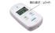

2022年
問題80 環境要素の測定に関する用語の組合せとして，最も不適当なものは次のうちどれか．
（1）温度 熱電対
（2）臭気 オルファクトメータ法
（3）熱放射 シンチレーションカウンタ
（4）酸素 ガルバニ電池
（5）気流 サーミスタ
2022年
問題80 正解（3） 頻出度AAA
熱放射の測定にはグローブ温度計（2022-80-1図参照）が用いられる．
シンチレーションカウンタは，放射線の空間線量の測定器である．
2022-80-1図 グローブ温度計


出典 柴田科学株式会社
https://www.sibata.co.jp/item/7868/
出典 公益社団法人
日本建築衛生管理教育センター
「新建築物の環境衛生管理第2版第1刷」中巻274
頁 図5-3-2(5)
グローブ温度計は薄銅板製の直径15cmの中空球体の表面を黒色つや消し塗りし，その中心にガラス管温度計の球部が達するように挿入したものである．
全方向から受ける熱放射を平均化した温度表示である「平均放射温度」\(MRT\)［℃］は，グローブ温度\(t_g\)を用いて次式で求めることができる． \[MRT=t_g+2.37 \sqrt{v} ~(t_g-t_a)\]
\(v\)：風速［m/s］，
\(t_a\)：気温［℃］．
この式から平均放射温度\(MRT\)は風速が小さくなると黒球温度に近づくことが分かる．
グローブ温度計はその構造上，示度が安定するまでには比較的時間を要する(15～20分間)ので，気流変動の大きい所での測定には不適当である．
「シンチレーションカウンタ」は，電離放射線により発光する物質（シンチレータという）の光を増幅して検出する装置である（2022-80-2図）．
2022-80-2図 シンチレーションカウンタの例

出典 株式会社堀場製作所
https://www.horiba.com/jpn/process-and-environmental/products/detail/action/show/Product/pa-1000-radi%E3%83%A9%E3%83%87%E3%82%A3-2265/
を基に作成
-(1) 熱電対は，種類の異なる2本の金属線，銅とコンスタンタン（銅とニッケルの合金）を接合して閉回路を作り，2つの接合点に温度差を与えると，回路に熱起電力が生じる（ゼーベック効果）．この熱起電力による電圧を測定して温度を求める．精度が高く，遠隔で示度を読み取れる利点を持つ．
-(2) オルファクトメーター法では，官能試験のための臭気の希釈を自動化された機械で行う．
-(4) ガルバニ電池式酸素センサーでは，陽極と陰極を電解液に浸し，電解液と空気（酸素）の間を酸素透過性の膜で隔離してある．透過酸素濃度に比例して流れる電流を測定して酸素濃度を得る．
-(5) サーミスタは温度の変化につれてその抵抗値がきわめて大きく変化する半導体で，温度計として利用される．精度が高く，遠隔で示度を読み取れる利点を持つ．汎用性が高く，空調に限らずあらゆる温度制御に用いられている．又，気流により奪われる熱量が風速の関数となることを測定原理として，熱式風速計としても利用される．